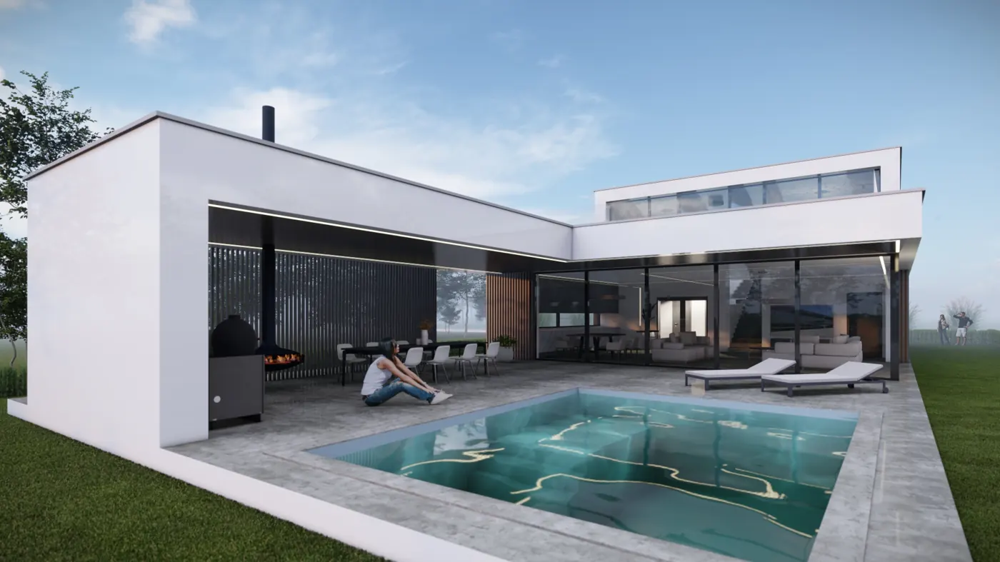
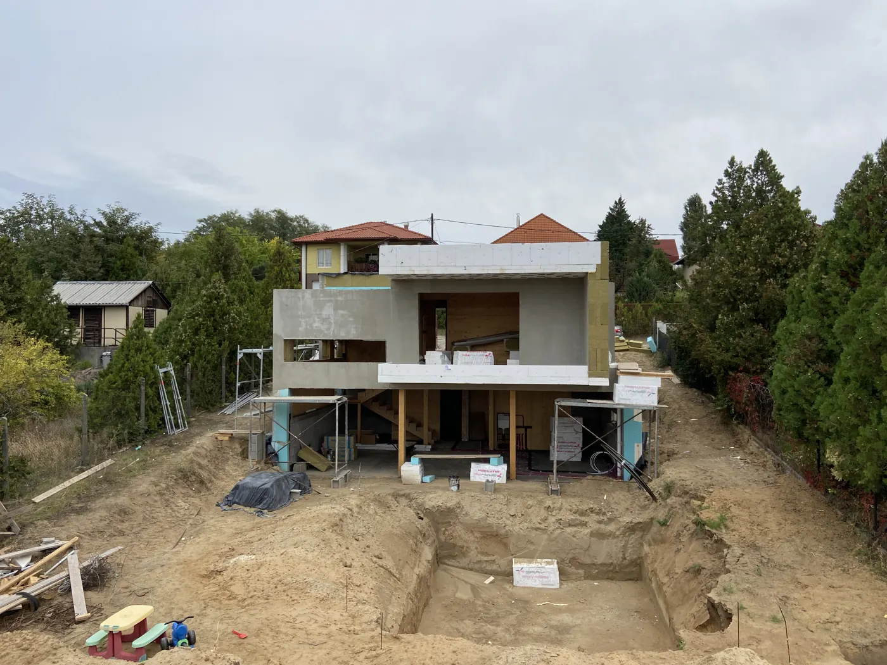
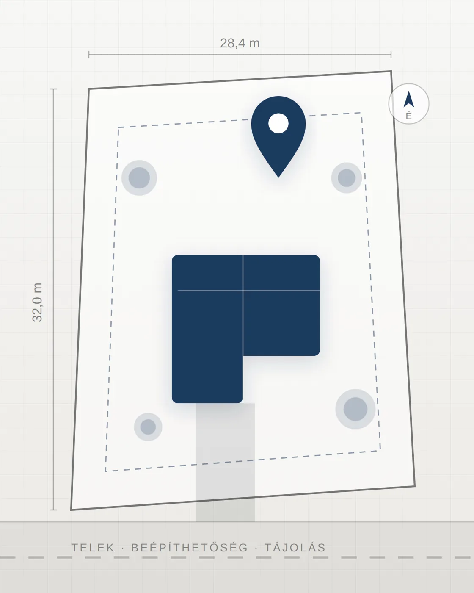
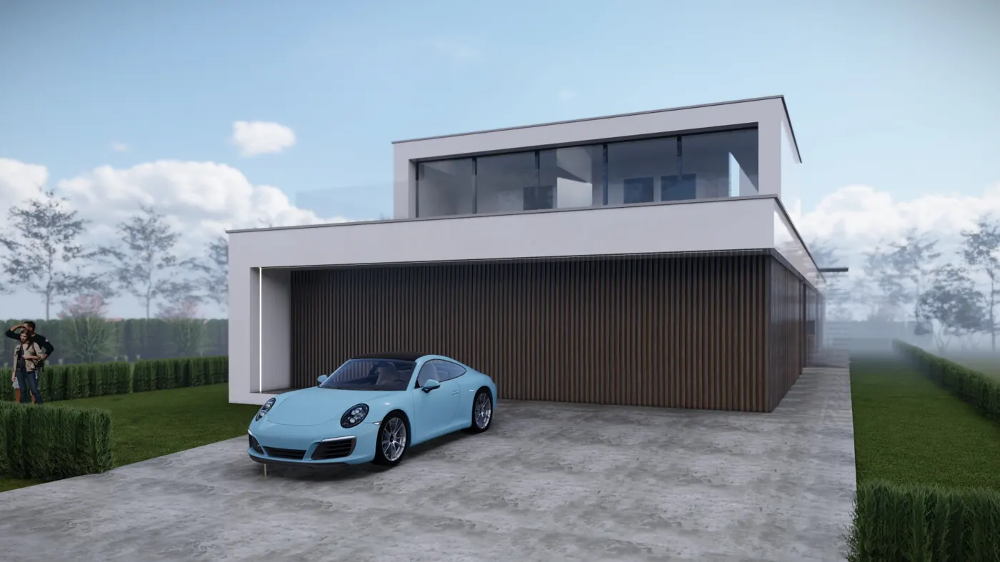
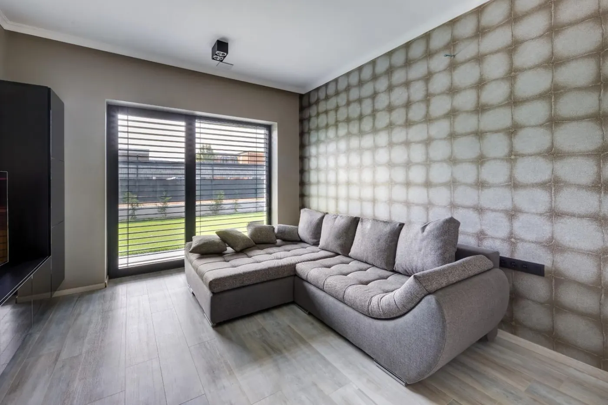
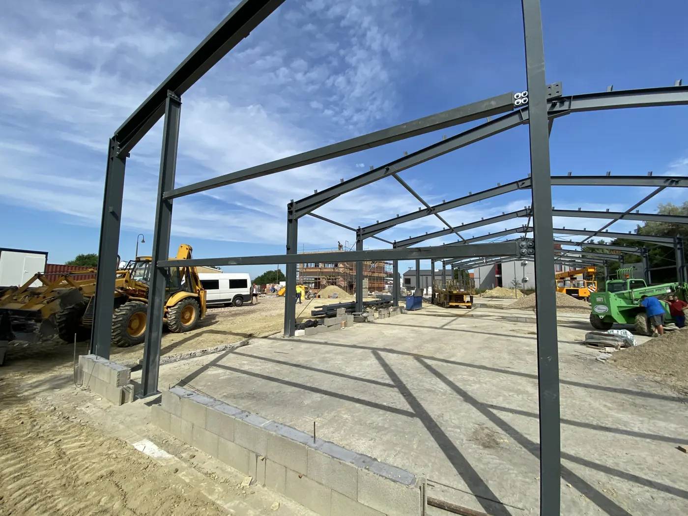
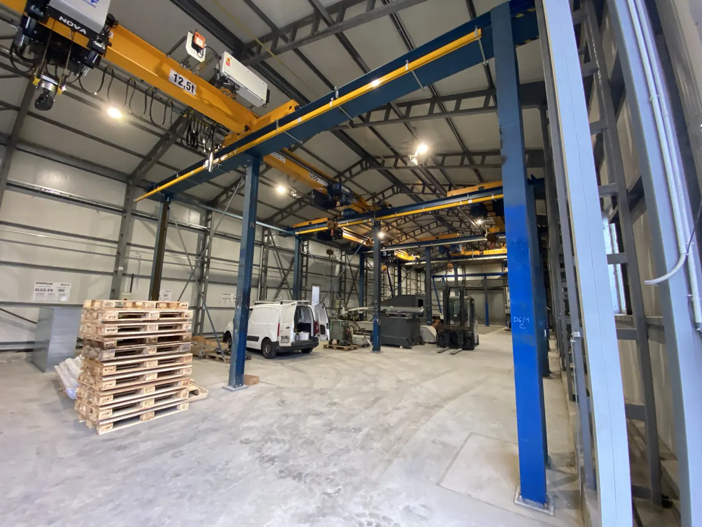
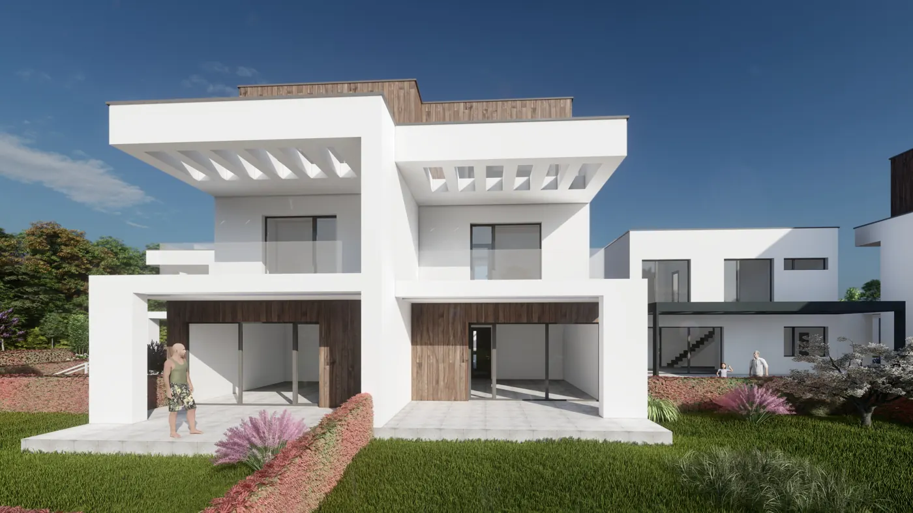

Építészeti tervezés
Minimalista családi házak, társasházak, ipari és kereskedelmi épületek tervezése — koncepciótervtől a részletes kiviteli tervig.
BeszéljünkÉpítészeti tervezés · Kivitelezés-menedzsment
Modern, minimalista családi házak, társasházak és ipari épületek tervezése — az ötlettől akár a kulcsrakész átadásig, 20+ év tapasztalattal Budapesten és Pest vármegyében, valamint országosan.
Kezdjük el
Rólam
Több mint 20 éve tervezek modern, minimalista családi házakat és lakóparkokat Budapest agglomerációjában. Minden feladatot szívügyemként kezelek — számomra csak a tökéletes megoldás elfogadható.
Hiszek az építészet együttműködésen alapuló megközelítésében: ügyfelekkel, szakági mérnökökkel és kivitelezőkkel közösen keltjük életre a terveket.
Sokszor előfordul, hogy tervező és kivitelező nem dolgozik összhangban — ez csúszást, problémát és felesleges kiadást szül. Nálam a kettő egy kézben van: a technológia sajátosságait már a tervezésnél figyelembe veszem.

Eredmények
Az évek során a minőség iránti elkötelezettségem a számokban is tükröződik — íme egy pillanatkép az eddigiekből.
Szolgáltatások

Minimalista családi házak, társasházak, ipari és kereskedelmi épületek tervezése — koncepciótervtől a részletes kiviteli tervig.
Beszéljünk
Kivitelező kiválasztása, tendereztetés, műszaki ellenőrzés, ütemezés és költségkontroll — minőség, határidő és büdzsé egy kézben.
Beszéljünk
A tökéletes telek megtalálásától a beépíthetőség vizsgálatáig — hogy már az első döntés is jó alapokra épüljön.
BeszéljünkReferenciák

6 képBudapest, XVIII. kerület · Családi ház
Csömör · Családi ház

6 képMogyoród · Családi ház

6 képVeresegyház · Ipari

Gödöllő · Ipari

Budapest, XVII. kerület · Lakópark
Gondolatok az építészetről
„A modern építészet az elhagyás művészete. Elhagyja a fölösleges díszítést, és a lényegre figyel: térre, arányra, fényre, funkcióra. Nem azért egyszerű, mert keveset akar mondani — hanem mert pontosan tudja, mit akar." Tóth Tamás
Blog
A tervezés ára számos tényezőtől függ — összefoglalom, mitől és mennyire.
Tovább TervfázisokA kiviteli terv költsége már az építés alatt sokszorosan megtérül. Megmutatom, miért.
Tovább FolyamatA tervezés a telek adottságainak vizsgálatával kezdődik — lépésről lépésre végigvezetem.
TovábbGYIK
A tervezési díj a telek adottságaitól, az épület méretétől és a szükséges tervfázisoktól függ (engedélyezési, bejelentési, kiviteli terv). Pontos árat személyes egyeztetés után adok — a blogomban részletes tájékoztató is olvasható.
Modern, minimalista családi házakat, társasházakat és lakóparkokat, valamint ipari, kereskedelmi és középületeket — elsősorban Budapesten és Pest vármegyében.
Az engedélyezési (vagy bejelentési) terv a hatósági eljáráshoz kell; a kiviteli terv a pontos megépítéshez, részletes csomóponti rajzokkal és mennyiségekkel. Utóbbi ára az építkezés alatt sokszorosan megtérül.
Igen. Igény szerint a telek kiválasztásától a tervezésen át a kivitelezés menedzsmentjéig mindent elintézek — Önnek csak be kell költöznie.
Kapcsolat
Ha szeretne többet megtudni a munkámról, vagy megbeszélni egy lehetséges projektet, forduljon hozzám bizalommal.
Tervezési területeim: Dunakeszi · Veresegyház · Gödöllő · Mogyoród · Pomáz
Kérjen ajánlatot néhány kattintással, az online ajánlatkérő oldalon — 24 órán belül jelentkezem.
Konzultáció kéréseAz online ajánlatkérő oldal nyílik meg, ahol részletesen leírhatja a projektjét (helyszín, épülettípus, kb. méret).